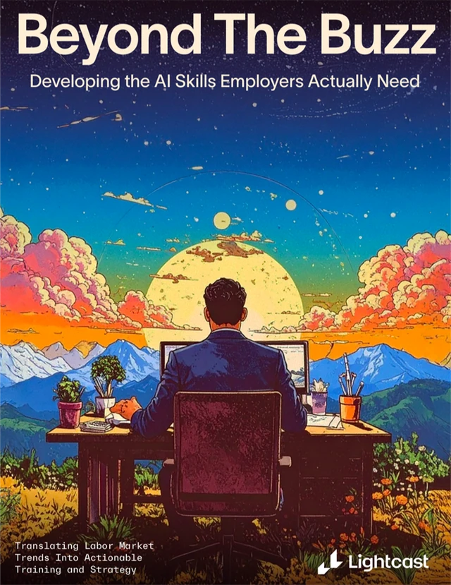
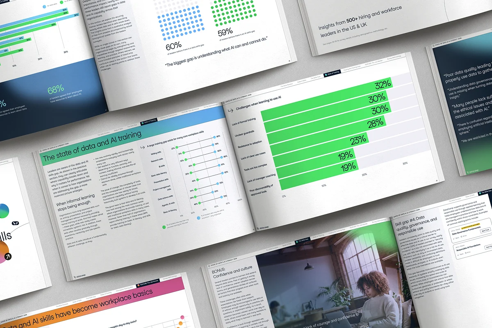

Hoy me han lanzado una pregunta que me ha dejado pensando sobre el estado actual de los perfiles de "IA" en el mundo laboral. Es una buena pregunta que merece ser respondida. En un sector tan dinámico no hay respuestas correctas, así que comparto mi opinión.
Para empezar, hay que conocer el estado actual de la IA en el mercado laboral. Por mi experiencia antes de incorporarme a Cold Culture y durante mi etapa como freelance, he observado pocas oportunidades de entrada y muchos candidatos interesados, gran parte de ellos con perfiles júnior o recién graduados.
La evolución tan acelerada del sector genera mucho ruido (para bien, en mi opinión) y a las corporaciones les urge contratar perfiles de IA (ingeniero de IA, ingeniero de LLM, ingeniero de MLOps...) aun sin tener un rumbo claro y establecido. Salvo las startups y corporaciones que se dedican exclusivamente a la IA, el resto de empresas no tienen proyectos a gran escala que requieran contratar masivamente este tipo de perfiles.

A esto se le añade el factor de adopción de estas tecnologías en cada tipo de perfil. A los perfiles cercanos a la jubilación, para quienes la curva de aprendizaje es pronunciada, estas tecnologías les causan respeto e incluso rechazo. Los perfiles de mediana edad y menos técnicos varían: algunos lo rechazan, otros recurren al topicazo de "la IA nos va a quitar el trabajo" y otros se esfuerzan por aprender y mantenerse al día.
Los más jóvenes son los que más rápido se adaptan y los más curiosos, sobre todo los más técnicos. En general, los perfiles técnicos (y que usan herramientas de IA en su día a día) son los que menos temen a la IA y los que más apuestan por ella, en cierto grado.
Sabiendo esto, la gente que no está muy informada acaba agrupando bajo la etiqueta «IA» perfiles con funciones muy diferentes. El término es súper amplio. Decir que te dedicas a la IA es como decir que eres médico. Ser especialista en seguridad de la IA no es lo mismo que ser ingeniero de IA. Ser pentester no es lo mismo que ser analista de ciberseguridad. Ser pediatra no es lo mismo que ser cirujano. Y así podría seguir.
Al ser un sector tan dinámico y "nuevo", no hay fronteras claras entre qué hace un rol u otro. Para alguien no técnico, esto puede llevar a comparar manzanas con peras o a esperar que un especialista en red teaming de IA asuma responsabilidades propias de un ingeniero de MLOps.
En mi opinión, saber utilizar herramientas de IA en tu día a día te ayuda a entender cómo funcionan las nuevas tecnologías, pero no te hace saber de "IA". El skill gap entre manejar herramientas (mediante prompting, skills o rutinas de automatización) y diseñar, evaluar, desplegar o proteger sistemas de IA es considerable. Del mismo modo, tener nociones de programación no equivale a ser desarrollador full stack.

Por otro lado, el mercado se adapta a las nuevas tecnologías, y las empresas deben ser conscientes de ello y aplicar estrategias con visión de futuro, no parches inmediatos como onboardings o cursos baratos para utilizar herramientas sin saber cómo aplicarlas en cada caso. Aun así, en la gran mayoría de casos suele salir más barato implementar sistemas que se adapten a la empresa y faciliten el trabajo de los empleados que hacer que la empresa entera se adapte a una nueva herramienta. Pero cada caso es diferente.
Para mí, ahí está la clave: entender qué necesita la empresa y qué puede aportar cada perfil antes de contratar bajo una etiqueta tan amplia como «IA».